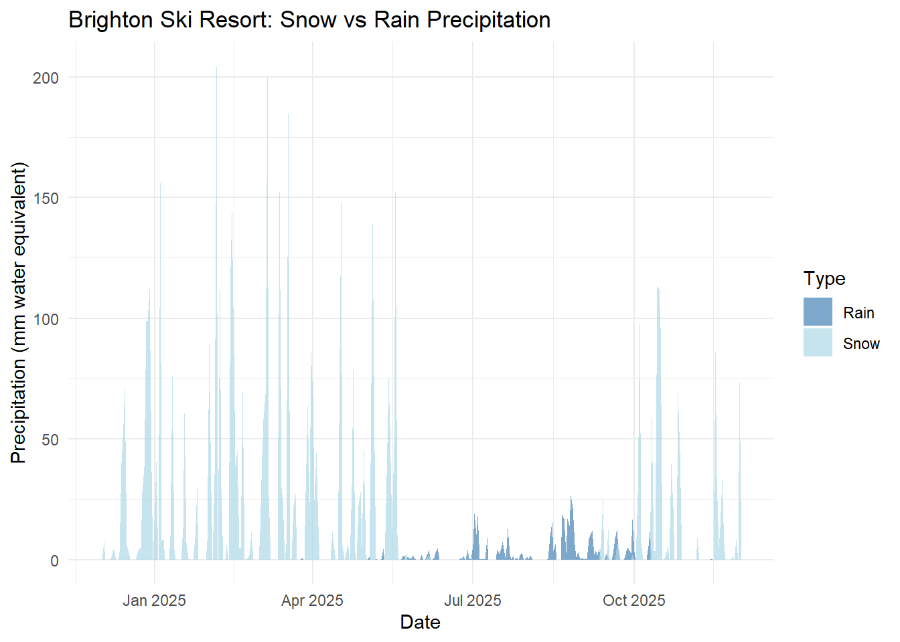

flowchart LR
A[Data Source] --> B[Extraction]
B --> C[Validation]
C --> D[Transformation]
D --> E[Loading]
E --> F[Destination]
Introduction to Data Pipelines
CFA Data Pipelines Workshop
Welcome!
Welcome to the CFA Data Pipelines Workshop
- Introduction to workshop objectives
- Overview of data pipelines
- Setting up your environment
Course Structure
- Session 1: Introduction (Now!)
- Session 2: Data Acquisition from APIs
- Session 3: Database Queries
- Session 4: Data Cleaning
Resources
Disclaimer
The views and opinions expressed in this presentation are those of the presenter and do not necessarily reflect the official policy or position of the University of Utah, the Center for Forecasting and Outbreak Analytics (CFA), or any other affiliated organizations.
AI Disclosure
This presentation was created with the assistance of artificial intelligence tools, including:
- GitHub Copilot for code generation and suggestions
- Large language models for content refinement and structure
All content has been reviewed and validated by the presenter.
Newish R Conventions
- The pipe operators
- Lambda functions
The Pipe Operator
The pipe operator (%>% from magrittr or |> native in R ≥4.1) chains operations together for cleaner, more readable code.
Without pipe:
# Nested functions (hard to read)
result <- round(
mean(
filter(data, value > 0)$value
),
2
)
# Multiple intermediate variables
filtered <- filter(data, value > 0)
values <- filtered$value
avg <- mean(values)
result <- round(avg, 2)With pipe:
# Clean, left-to-right flow
result <- data |>
filter(value > 0) |>
pull(value) |>
mean() |>
round(2)
# Read as: "take data, then
# filter, then extract values,
# then calculate mean, then round"Lambda Functions (Anonymous Functions)
Short, unnamed functions created on-the-fly.
R:
# Traditional function
square <- function(x) x^2
lapply(1:5, square)
# Lambda/anonymous function
lapply(1:5, function(x) x^2)
# New R ≥4.1 shorthand
lapply(1:5, \(x) x^2)Python:
# Traditional function
def square(x):
return x**2
list(map(square, range(1, 6)))
# Lambda function
list(map(lambda x: x**2, range(1, 6)))
# List comprehension (often clearer)
[x**2 for x in range(1, 6)]What is a Data Pipeline?
A data pipeline is a series of data processing steps where:
- Data is ingested from one or more sources
- Data is transformed or processed
- Data is loaded into a destination for analysis or storage
Why Data Pipelines?
Benefits
- Automation
- Reproducibility
- Scalability
- Error handling
Use Cases
- ETL processes
- Real-time analytics
- Data warehousing
- ML model training
Pipeline Design Patterns
1. Extract-Transform-Load (ETL)
- Extract data from sources
- Transform in staging area
- Load into destination
2. Extract-Load-Transform (ELT)
- Extract data from sources
- Load into destination
- Transform in destination
Common Data Sources
- APIs: REST, GraphQL, SOAP
- Databases: SQL, NoSQL
- Files: CSV, JSON, XML, Parquet
- Streaming: Kafka, message queues, logs
- Web scraping: HTML parsing
Pipeline Components
Best Practices
- Idempotency: Pipeline can run multiple times safely
- Error Handling: Graceful failures and retries
- Logging: Track pipeline execution
- Monitoring: Alert on failures
- Testing: Validate data quality
- Documentation: Clear pipeline logic
Idempotency (Definition)
An operation (task, step, or entire pipeline run) is idempotent if executing it multiple times with the same inputs results in the same final state and does not create duplicate side effects (e.g., repeated inserts, duplicate files, double-charged API calls).
Idempotency Key strategies:
- Use upserts/merges instead of plain inserts (match on a natural or surrogate key).
- Write outputs atomically (temp file then rename) to avoid partial artifacts.
- Make transformations pure: avoid relying on hidden global state or timestamps unless required.
- Guard external side effects (e.g., check if data already fetched; hash content before reprocessing).
- Design idempotent DAG tasks: each task declares its inputs and outputs; reruns only recompute what is invalidated.
Benefits: safer reruns after failure, reproducibility, easier recovery, and confidence in scheduled (e.g., nightly) executions.
Error Handling Strategies
Detection
- Input validation
- Schema checks
- Data quality tests
- Exception catching
Recovery
- Retry with backoff
- Dead letter queues (i.e. Human intervention needed queue)
- Partial success handling
- Alerting and notifications
Logging and Monitoring
Logging
- Structured logs (JSON)
- Log levels (DEBUG, INFO, WARNING, ERROR)
- Contextual information (timestamps, user IDs)
- Centralized log storage
Monitoring
- Pipeline execution metrics
- Data quality metrics
- Performance dashboards
- Alerting thresholds
- SLA (Service Level Agreement) tracking
Documentation Best Practices
What to Document
- Pipeline purpose and business logic
- Data sources and schemas
- Transformation rules
- Dependencies and prerequisites
- Expected runtime and resources
- Contact information
How to Document
- README files in repositories
- Inline code comments
- Docstrings for functions
- Data dictionaries
- Architecture diagrams
- Runbooks for operators (Advanced)
Tools and Frameworks
Development Environment Setup
Python Setup
# Create virtual environment
python -m venv venv
source venv/bin/activate # or venv\Scripts\activate on Windows
# Install common packages
pip install requests pandas sqlalchemyR Setup
# Install common packages
install.packages(c("httr2", "dplyr", "DBI", "dbplyr"))Your First Pipeline
Let’s build a simple pipeline:
- Fetch data from an API
- Clean and validate
- Store in a database
We’ll start with the basics and build complexity throughout the course.
Example Pipeline: Weather Data
Fetch weather data → Clean → Store
We will be fetching daily precipitation for Brighton Ski Resort for the last year.
R Example:
## Needed Packages #####
library(httr2) #< interacting with API (modern version)Warning: package 'httr2' was built under R version 4.5.2library(dplyr) #< data cleaning and processing
Attaching package: 'dplyr'The following objects are masked from 'package:stats':
filter, lagThe following objects are masked from 'package:base':
intersect, setdiff, setequal, unionlibrary(DBI) #< generic database interface
library(RSQLite) #< specific database we will useWarning: package 'RSQLite' was built under R version 4.5.2library(ggplot2) #< for visualizationR Example Pipeline (continued)
Step 1: Fetch data from Open-Meteo API (Brighton Ski Resort)
end_date <- Sys.Date()
start_date <- end_date - 365
request("https://archive-api.open-meteo.com/v1/archive") |>
req_url_query(
latitude = 40.5981,
longitude = -111.5831,
start_date = format(start_date, "%Y-%m-%d"),
end_date = format(end_date, "%Y-%m-%d"),
daily = "precipitation_sum,snowfall_sum",
timezone = "America/Denver"
) |>
req_perform() |>
resp_body_json() -> dataR Example Pipeline (continued)
Step 2: Clean and validate
df <- data.frame(
date = as.Date(unlist(data$daily$time)),
precipitation_mm = unlist(data$daily$precipitation_sum),
snowfall_cm = unlist(data$daily$snowfall_sum)
)
df <- df %>%
# Remove nulls and validate ranges
filter(!is.na(precipitation_mm), !is.na(snowfall_cm)) %>%
filter(precipitation_mm >= 0, snowfall_cm >= 0) %>%
# Add derived variables
mutate(
snow_water_equiv_mm = snowfall_cm * 10,
rain_mm = pmax(0, precipitation_mm - snow_water_equiv_mm)
)R Example Pipeline (continued)
Step 3: Store in SQLite database
conn <- dbConnect(RSQLite::SQLite(), "weather_data.db")
dbWriteTable(conn, "brighton_weather", df, overwrite = TRUE)
dbDisconnect(conn)
cat(sprintf("Stored %d records\n", nrow(df)))Stored 366 recordscat(sprintf("Total snowfall: %.1f cm\n", sum(df$snowfall_cm)))Total snowfall: 542.1 cmR Example Pipeline (finished)
Step 4: Do something with the data
# Create stacked area plot
ggplot(df, aes(x = date)) +
geom_area(aes(y = rain_mm, fill = "Rain"), alpha = 0.7) +
geom_area(aes(y = snow_water_equiv_mm, fill = "Snow"), alpha = 0.7) +
scale_fill_manual(values = c("Rain" = "steelblue", "Snow" = "lightblue")) +
labs(
title = "Brighton Ski Resort: Snow vs Rain Precipitation",
x = "Date",
y = "Precipitation (mm water equivalent)",
fill = "Type"
) +
theme_minimal()R Example Pipeline (plot)

Python Example Pipeline: Weather Data
## Needed Packages #####
import requests # interacting with API
import pandas as pd # data cleaning and processing
import sqlite3 # database interface
from datetime import datetime, timedeltaPython Example Pipeline (continued)
Step 1: Fetch data from Open-Meteo API (Brighton Ski Resort)
end_date = datetime.now()
start_date = end_date - timedelta(days=365)
url = "https://archive-api.open-meteo.com/v1/archive"
params = {
'latitude': 40.5981,
'longitude': -111.5831,
'start_date': start_date.strftime('%Y-%m-%d'),
'end_date': end_date.strftime('%Y-%m-%d'),
'daily': 'precipitation_sum,snowfall_sum',
'timezone': 'America/Denver'
}
response = requests.get(url, params=params)
data = response.json()Python Example Pipeline (continued)
Step 2: Clean and validate
df = pd.DataFrame({
'date': pd.to_datetime(data['daily']['time']),
'precipitation_mm': data['daily']['precipitation_sum'],
'snowfall_cm': data['daily']['snowfall_sum']
})
# Remove nulls and validate ranges
df = df.dropna()
df = df[(df['precipitation_mm'] >= 0) & (df['snowfall_cm'] >= 0)]
# Add derived variables
df['snow_water_equiv_mm'] = df['snowfall_cm'] * 10
df['rain_mm'] = (df['precipitation_mm'] - df['snow_water_equiv_mm']).clip(lower=0)Python Example Pipeline (continued)
Step 3: Store in SQLite database
conn = sqlite3.connect('weather_data_py.db')
df.to_sql('brighton_weather', conn, if_exists='replace', index=False)366conn.close()
print(f"Stored {len(df)} records")Stored 366 recordsprint(f"Total snowfall: {df['snowfall_cm'].sum():.1f} cm")Total snowfall: 542.1 cmPython Example Pipeline (finished)
Step 4: Do something with the data
import matplotlib.pyplot as plt
# Create stacked area plot
fig, ax = plt.subplots(figsize=(10, 6))
ax.fill_between(df['date'], 0, df['rain_mm'],
label='Rain', alpha=0.7, color='steelblue')
ax.fill_between(df['date'], df['rain_mm'],
df['rain_mm'] + df['snow_water_equiv_mm'],
label='Snow', alpha=0.7, color='lightblue')
ax.set_xlabel('Date')
ax.set_ylabel('Precipitation (mm water equivalent)')
ax.set_title('Brighton Ski Resort: Snow vs Rain Precipitation')
ax.legend()
plt.tight_layout()
plt.show()Python Example Pipeline (plot)

Questions?
Next session: Data Acquisition from APIs